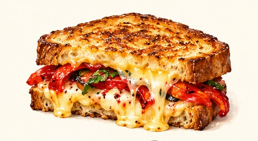

THE ILLUSTRATED MENU / Nº 01Market
Market
kitchen.
Ten house recipes. Pick a dish to edit, or bring a photo of your own.

Opening menu…
Ten house recipes. Pick a dish to edit, or bring a photo of your own.

Opening menu…